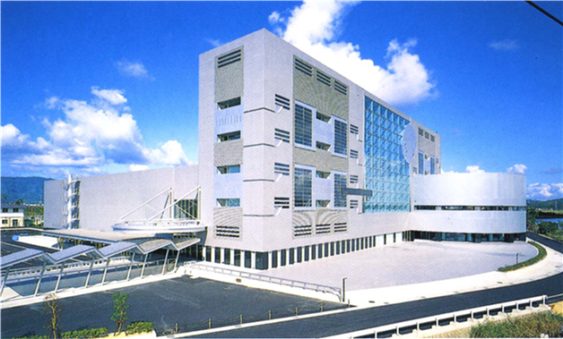
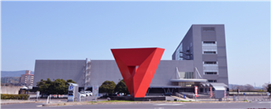
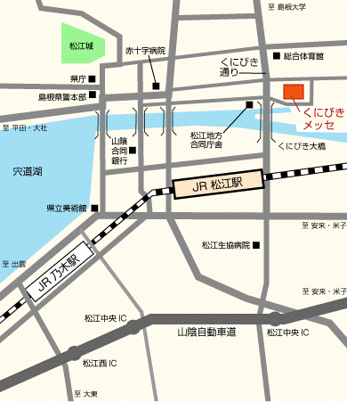

Venue
Conference Site: Kunibiki Messe (Shimane Prefectural Convention Center), Matsue, Shimane
Introduction: "Kunitake Messe" is the Convention Center of Shimane Prefecture. Kunibiki Messe is a convention facility that has both the exhibition facilities and the conference facilities. It is located in the center of the city and is located about 7 minutes walk from Jr Matsue station. In addition, since this foundation is operated directly, we will respond quickly and flexibly to the detailed use of the venue and emergency response.
ADDR: Location: No. 2 No. 1, Shonen Minami, Matsue City, Shimane Prefecture(島根県松江市学園南1丁目2番1号)
TEL: 0852-24-1111
FAX: 0852-22-9219
Matsue Convention Center: http://en.matsue-cvb.jp
Landmark:
  Accommodation
There are some options how you can get to Matsue like showed below.
- Address: Jia 18, Yanshui Road (Yanshui Lu), Yanqi Lake , Huairou Scenic Area, Beijing, 101407, China
- TEL: (+86) 010-69618888
- Booking: Delux Twin Room(CNY 2400)/Deluxe Suite(CNY 4000)